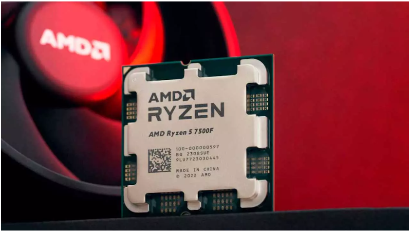
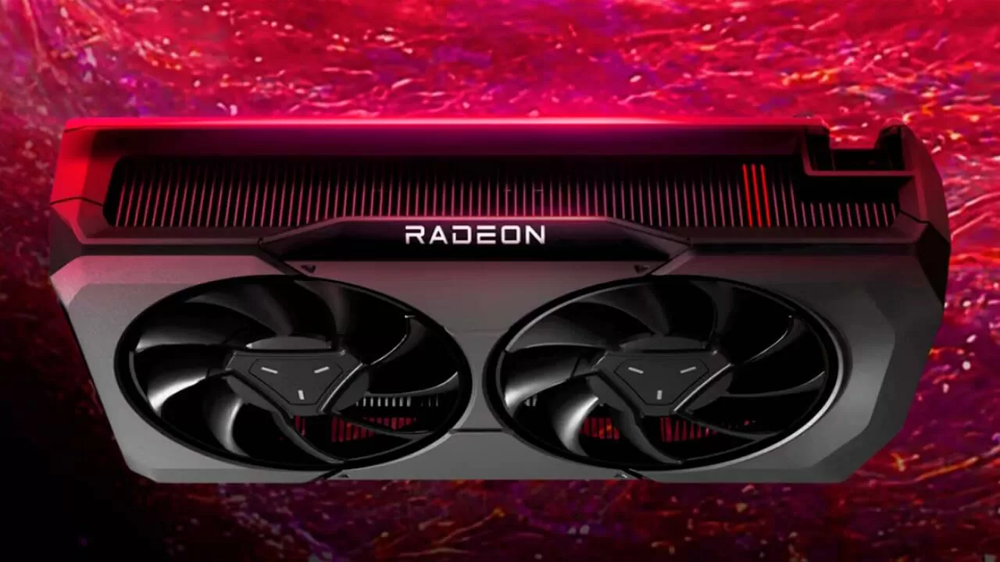
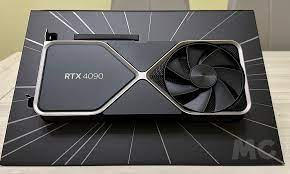

El comienzo de una nueva era
vienen a renovar a toda la gama de cerebros electrónicos Ryzen. Los mismos están destinados a los gamers, pero también dirigidos a los generadores de contenidos
AMD confirma la existencia de la gráfica RX 7600 XT
Hoy tenemos una nueva noticia relacionada con estas tarjetas gráficas y es que AMD ha confirmado la existencia de la Radeon RX 7600 XT, otra gráfica de gama baja pensada para jugar a 1080p
NVIDIA habría dado marcha atrás en sus planes de lanzar la RTX 4090 Ti
i estás aguardando a que NVIDIA lance la RTX 4090 Ti para finalmente abrir tu cartera y potenciar tu PC, quizá tu espera se prolongará por la eternidad. Un nuevo reporte avisa que el fabricante no tiene intención de lanzar la actualización intermedia de su tarjeta gráfica más poderosa
El Intel Core i7-14700K rinde hasta un 20% más en multinúcleo que el Core i7-13700K
El nuevo Intel Core i7-14700K, que incluye más núcleos, también ofrece una velocidad de reloj superior en los núcleos de alto rendimiento y de alta eficiencias